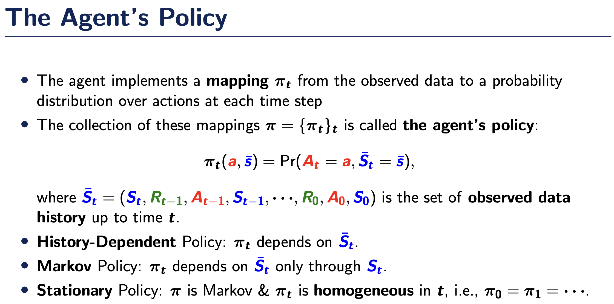

Part 2: Proof of the Existence of the Optimal Stationary Policy
Revisting different classes of policies

Sketch of the Proof
\(\newcommand{\P}{\mathbb{P}}\) \(\newcommand{\E}{\mathbb{E}}\) \(\newcommand{\S}{\mathcal{S}}\) \(\newcommand{\A}{\mathcal{A}}\) \(\newcommand{\R}{\mathbb{R}}\) \(\newcommand{\L}{\mathcal{L}}\) \(\newcommand{\Vpi}{V^{\pi}}\)
We aim to show under the MDP assumption (Markovianity & time-homogeneity), there exists an optimal stationary deterministic policy whose value is no worse than any history-dependent policy. Formally speaking, we aim to show the existence of \(\pi^*\in\) SD such that
\[V^{\pi^*}(s)=\sup_{\pi \in \mathrm{HR}} \Vpi(s)\]
for any state \(s\), where HR is the class of history-dependent (random) policies and SD is the class of stationary deterministic policies. We also use MR to denote the class of Markov (random) policies.
Here the function \(\Vpi(s)\) is the value function, that is, the expected discounted reward in an infinite horizon with policy \(\pi\) and initial state \(s\): \[ \Vpi(s) = \sum_{t = 0}^{\infty} \gamma^t E^{\pi}(R_t \mid S_0 = s)\]
To simplify the proof, we focus on the setting where \(R_t\) is a deterministic function of \((A_t,S_t)\), i.e., \(R_t=r(S_t, A_t)\) for some reward function \(r\).
Recall that the Markov Assumption meant memorylessness in the sense that for any state \(s\)
\[\P(S_{t+1} = s \mid A_t, S_t, \ldots, A_1,S_1,A_0,S_0) = \P(S_{t+1} = s \mid A_t, S_t)\]
In addition, neither \(r\) nor \(\P(S_{t+1} = s \mid A_t, S_t)\) depend on \(t\), under the time-homogeneity assumption.
We will prove this statement in three steps. We will follow the proof of Shi et al (2020).
- First, we show that Markov Policies are as good as history-dependent policies: \(\sup_{\pi \in \mathrm{HR}} \Vpi(s) = \sup_{\pi \in \mathrm{MR}} \Vpi(s)\) for any \(s\). 2.For any function \(\nu\) that satisfies the Bellman optimality equation we have \(\nu(s) \ge \sup_{\pi \in \mathrm{MR}} \Vpi(s)\).
- Existence of \(\pi^* \in \mathrm{SD}\) such that \(V^{\pi^*}\) satisfies the Bellman optimality equation.
Combining 2. together with 3. yields \(V^{\pi^*}(s) \ge \sup_{\pi \in \mathrm{MR}} \Vpi(s)\). Together with 1., we obtain \(V^{\pi^*}(s) \ge \sup_{\pi \in \mathrm{HR}} \Vpi(s)\). The proof is completed.
Proof of 1.
We prove the following equation. For any policy \(\pi \in \mathrm{HR}\), there exists a policy \(\bar \pi \in \mathrm{MR}\) such that for all start states \(s_0\) and any state \(s\) and action \(a\) we have
\[ \P^\pi(A_t = a, S_t = s | S_0 = s_0) = \P^{\bar \pi}(A_t = a, S_t = s | S_0 = s_0) \]
by induction. Here, \(\bar \pi\) is allowed to depend on \(s_0\). But it does not depend on \(s\) and \(a\). This equation implies that for any \(s_0\) and \(\pi\), there exists a Markov policy \(\bar \pi\) under which the generated state-action pair at each time has the same conditional distribution as that under \(\pi\) given \(S_0=s_0\). Since the reward is a deterministic function of the state-action pair, the expected values of rewards given \(S_0=s_0\) under \(\pi\) and \(\bar \pi\) are the same. The proof is thus completed.
For \(t = 0\) the statement is trivial. Now assume that the statement holds for some time \(t\). We will prove that then it also holds for \(t + 1\).
By conditional probability we have for all \(s\) that
\[ \begin{align} \P^\pi(S_{t+1} = s | S_0 = s_0) &= \E^\pi(\P(S_{t+1} = s | A_t, S_t, S_0 = s_0) | S_0 = s_0) \\ &= \E^\pi(\P(S_{t+1} = s | A_t, S_t) | S_0 = s_0) \qquad \qquad \text{by Markov Assumption} \\ &= \E^{\bar \pi}(\P(S_{t+1} = s | A_t, S_t) | S_0 = s_0) \qquad \qquad \text{by induction hypothesis} \\ &= \P^{\bar \pi}(S_{t+1} = s | S_0 = s_0). \end{align} \]
Hence we have that
\[ \begin{align} \P^{\pi}(A_{t+1} = a, S_{t+1} = s \mid S_0 = s_0) &= \P^\pi(A_{t+1} = a | S_{t+1} = s, S_0 = s_0) \P^{\pi}(S_{t+1} = s | S_0 = s_0) \\ &= \P^{\bar \pi}(A_{t+1} = a | S_{t+1} = s, S_0 = s_0) \P^{\bar \pi}(S_{t+1} = s | S_0 = s_0) \\ &= \P^{\bar \pi}(A_{t+1} = a, S_{t+1} = s \mid s_0), \end{align} \]
where the action probability of \(\bar \pi\) at time step \(t +1\) is defined to be equal to the action probability of \(\pi\) given \(S_0=s_0\).
Proof of 2.
Recall that a function \(\nu: s \to \mathbb{R}\) fulfills the Bellman optimality equations if
\[
\nu(s) = \max_{a} \left[r(s, a) + \gamma \sum_{s'} \nu(s') \P(S_{t+1}=s'|A_t=a,S_t=s)\right]
\]
I want to stress the point that at this point we have not proven that such a \(\nu\) exists. Nonetheless we can make statements that hold for all \(\nu\) that fulfill these equations. We now prove Step 2, that is \(\nu(s) \ge \sup_{\pi \in \mathrm{MR}} \Vpi(s)\).
Let \(\pi=\{\pi_k\}_k \in \mathrm{MR}\) be arbitrary where \(\pi_k\) denotes the mapping the agent implements at time \(k\). We aim to show \(\nu(s)\ge \Vpi(s)\). As \(\nu\) fulfills the Bellman equations we in particular have that \[ \nu(s) \ge r(s, a) + \gamma \sum_{s'} \nu(s') \P(S_{t+1}=s'|A_t=a,S_t=s), \] for any \(a\). As such, \[\begin{eqnarray*} \nu(s) &\ge& \sum_a \pi_0(a|s) \left[r(s, a) + \gamma \sum_{s'} \nu(s') \P(S_{t+1}=s'|A_t=a,S_t=s)\right]\\ &=&\sum_a \pi_0(a|s) r(s, a) + \gamma \sum_{a,s'} \pi_0(a|s) \nu(s') \P(S_{t+1}=s'|A_t=a,S_t=s) \end{eqnarray*}\]
The first term on the right-hand-side corresponds to the immediate reward under \(\pi_0\). Iteratively applying the above and choose \(\pi_k\) as the weight function at each iteration we get
\[ \nu(s) \ge \sum_{a,s}\pi_0(a|s)r(s, a) + \sum_{k=1}^K \gamma^k \E^{\pi}(r(S_k, A_k) \mid S_0 = s) + \gamma^{K+1} \E^{\pi}(\nu(S_{K+1}) \mid s_0 = s) \]
As \(\nu\) is bounded, the last term converges to zero as \(K \to \infty\). This leads to \[\nu(s) \ge \Vpi(s)\]
Proof of 3.
We will use Banach’s fixed point theorem to show the existence of a funciton \(\nu_0\) that satisfies the optimal bellman equation. Suppose the existence has been proven. It follows from Bellman’s equation that \[ \nu_0(s) = \max_{a} \left[r(s, a) + \gamma \sum_{s'} \nu_0(s') \P(S_{t+1}=s'|A_t=a,S_t=s)\right] \]
For each state \(s\), there exists an action that maximizes the right-hand-side. This allows us to define a stationary deterministic policy \(\pi^*\) that takes \(s\) as input and outputs the argmax. The Bellman optimality equation can be rewritten as \[ \nu_0(s) = \left[r(s, \pi^*(s)) + \gamma \sum_{s'} \nu_0(s') \P(S_{t+1}=s'|A_t=\pi^*(s),S_t=s)\right]. \] Using similar arguments in Proof of 2., we have by iteratively applying the above equation that \[ \nu_0(s) = \sum_{s}r(s, \pi^*(s)) + \sum_{k=1}^K \gamma^k \E^{\pi^*}(r(S_k, A_k) \mid S_0 = s) + \gamma^{K+1} \E^{\pi^*}(\nu_0(S_{K+1}) \mid s_0 = s) \] Letting \(K\to \infty\) leads to \(\nu_0(s)=V^{\pi^*}(s)\) for any \(s\).
It remains to show the existence. Consider the following function \(F\) that maps a function \(\nu\) to another function \(F_{\nu}\) defined on the state space such that
\[F_{\nu}(s) = \max_{a} \left[r(s,a) + \gamma \sum_{s'} \nu(s') \P(S_{t+1}=s'|A_t=a,S_t=s)\right].\]
Then for two different functions \(\nu_1, \nu_2\) we have
\[ \begin{aligned} \max_s |F_{\nu_1}(s) - F_{\nu_2}(s)| &= \max_s \left|\max_{a} \left[r(s,a) + \gamma \sum_{s'} \nu_1(s') \P(S_{t+1}=s'|A_t=a,S_t=s)\right]-\max_{a} \left[r(s,a) + \gamma \sum_{s'} \nu_2(s') \P(S_{t+1}=s'|A_t=a,S_t=s)\right]\right| \\ & \le \max_s \max_a \left|\left[r(s,a) + \gamma \sum_{s'} \nu_1(s') \P(S_{t+1}=s'|A_t=a,S_t=s)\right]-\left[r(s,a) + \gamma \sum_{s'} \nu_2(s') \P(S_{t+1}=s'|A_t=a,S_t=s)\right]\right|\\ & \le \gamma \max_{a,s} \left|\sum_{s'} [\nu_1(s')-\nu_2(s')]\P(S_{t+1}=s'|A_t=a,S_t=s) \right| \\ &\le \gamma \max_{a,s,s'} |\nu_1(s')-\nu_2(s')| \left[\sum_{s'} |\P(S_{t+1}=s'|A_t=a,S_t=s)|\right]\\ & = \gamma \max_{a,s} |\nu_1(s)-\nu_2(s)| \end{aligned} \]
Hence by Banach’s fixed point theorem we have a unique \(\nu^*\) such that \(F(\nu^*) = \nu^*\). The proof is hence completed.